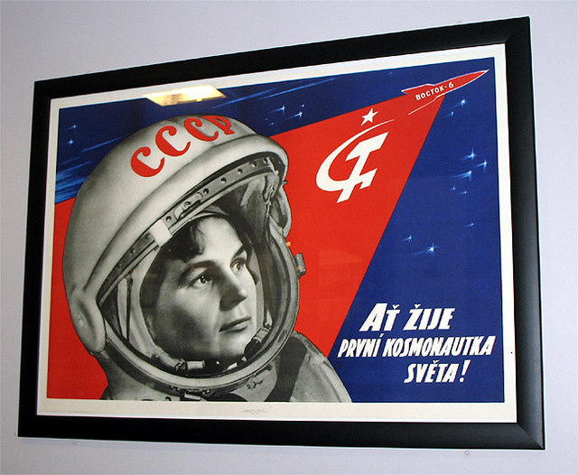
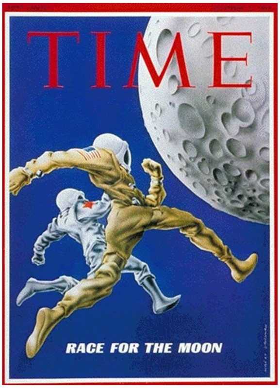

Para informarse
Un nuevo campo de batalla: El espacio
El pistoletazo de salida de la carrera espacial se da en 1955 cuando, con motivo del Año Geofísico Internacional a celebrar entre 1957 y 1958 cuyo fin principal era el establecer una red de cooperación científica internacional para abordar la exploración de los alrededores cósmicos de la Tierra, prestando especial interés a nuestro satélite y sus recursos, tanto los Estados Unidos como la Unión Soviética declararon sus intenciones de enviar satélites artificiales al espacio.
La desconfianza entre los otrora aliados en la Segunda Guerra Mundial, ha ido creciendo desde la derrota de la Alemania Nazi, la división de Berlín por el bando aliado y la progresiva radicalización de las posiciones políticas de la Unión Soviética y Estados Unidos se acusan mútuamente de violaciones de tratados, acuerdos y pactos económicos, sociales y geopolíticos.
El lanzamiento con éxito del Sputnik I, el 4 de octubre de 1957, y el terror que desata su continuo beep-beep entre la población civil y militar, obliga al entonces presidente Dwight Eisenhower a fundar, el 1 de octubre de 1958, la NASA con una orientación de marcado carácter civil al fomentar las aplicaciones pacíficas de la ciencia espacial. Con la puesta en órbita de la perrita Laika a bordo del Sputnik II, el gobierno norteamericano incrementa la sensación de amenaza que le despierta el hecho de que objetos soviéticos sobrevuelen su espacio aéreos sin posibilidad de detectarlos con la consiguiente indefensión que esto implicaría en el caso de que se vieran atacados por ellos. La guerra fría se desarrolla en un nuevo campo de batalla: el espacio.
Los dos actores principales de esta carrera pugnan por:
- Poner en órbita satélites artificiales de muy diversa índole; con finalidad científica, para mejorar las comunicaciones, espías,...
- Enviar seres humanos al espacio; cada lanzamiento debe superar al anterior, se promueven misiones y se diseñan estaciones espaciales para ser habitadas por humanos, sistemas de abastecimiento de misiones tripuladas en el espacio, paseos espaciales y el equipamiento necesario para ello,...
- Explorar otros planetas, los confines del sistema solar y lo que hay más allá de él a través del diseño y envío de sondas espaciales, el diseño de telescopios espaciales y de diferentes instrumentación científica diseñada para funcionar en satélites artificiales,...
- Llegar a la superficie lunar; esta es sin duda la guinda del pastel. ¿Aquel que ponga un pie en la Luna será el vencedor de la carrera?
La carrera espacial: otros campos de batalla

La carrera espacial no solo se libró en el campo de la ingeniería, las ramas de la física o las matemáticas o en el incipiente campo de la computación; las primeras computadoras en el espacio serían las del programa Gemini, el programa Vostok no contaba con ningún tipo de ayuda computerizada para el piloto. Había múltiples campos de batalla en los que había de librarse una encarnizada lucha por la supremacía como primera potencia mundial. Veamos, brevemente, algunos de ellos:
- Carrera armamentística: El desarrollo armamentístico tras la segunda guerra mundial y la invención de la bomba nuclear desató el pánico a que a través del diseño de aeronaves y satélites pudieran iniciarse un nuevo tipo de guerra mucho más peligrosa que el lanzamiento de misiles balísticos intercontinentales; la guerra espacial. Este miedo, auspiciado por el continuo beep-beep del Sputnik 1 percibido por las estaciones de radio estadounidenses fue uno de los motivos principales de que el presidente Eisenhower creara la NASA.
- Guerra propagandística: La rivalidad existente entre USA y URSS inundaba cualquier aspecto de la vida de sus ciudadanos, desde aspectos puramente deportivos o sociales a aspectos culturales y políticos que llevaban a conciudadanos a acusarse de traidores solo por el hecho de condenar inequívocamente cualquier tipo de acción, contienda o acto que hubiera llevado a cabo el país enemigo. Ambas superpotencias ensalzaban en exceso cualquier tipo de éxito, incluso los cuestionables como el hecho de que los avances de las sucesivas misiones Vostok eran más bien humildes o que el programa Mercury americano solo había conseguido realizar vuelos suborbitales, y escondían sus sonoros fracasos; el fracaso de cohete N-1 soviético o el desastre del Vanguard TV3 americano, son ejemplo de ello.
Y el ganador es...

Al contrario de lo que muchos puedan pensar, los hechos son claros, en esta primera época de la carrera espacial, la del "diseñador jefe" Koroliev, la carrera espacial la ganó...
Para averiguarlo os recomiendo que escuchéis este par de podcast sobre el tema y que, de camino profundicéis en vuestro conocimiento para poder entender por qué el mundo es como es hoy en día.
¿Quién ganó la carrera espacial? (Parte 1)*
¿Quién ganó la carrera espacial? (Parte 2)*
Los dos audios que pueden escucharse a continuación son el resultado de la trascripción oral del documental de Michael Lachman producido para la BBC que aborda con detalle estos hechos históricos